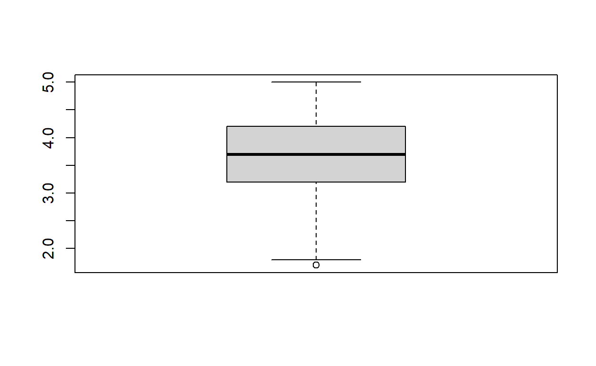

Central Tendency and Dispersion
Overview
This tutorial focuses on central tendency and dispersion, two measures used to describe variables numerically. The tutorial includes a combination of videos, text, knowledge check quizzes, and exercises.
The PowerPoint slides for the presentation in the videos are on Canvas if you want a copy. For those not enrolled in my class, these files can be found here: https://osf.io/9tgxm/
The videos (as well as others) can also be found on my YouTube channel https://www.youtube.com/channel/UC5kDZTyHZlgSgSEa3YQXOig
Learning Objectives
Conduct analyses using R
Select measures of central tendency appropriate to a variable’s level of measurement
Compare variables in terms of central tendency and dispersion
Describe information provided by measures of central tendency and dispersion
Data
All data files exist within this package, so we can simply call them without reference to a file location.
denial is the datafile used in exercises. These data examine relationships between climate denial and a variety of other beliefs.
Jylhä, K. M., & Hellmer, K. (in press). Right-wing populism and climate change denial: The roles of exclusionary and anti-egalitarian preferences, conservative ideology, and antiestablishment attitudes. Analyses of Social Issues and Public Policy. https://doi.org/10.1111/asap.12203
The datafile includes the variables CCD (Climate Change denial), ANTIESTABL (Anti Establishment Beliefs), EXCL_ANTIEG (anti egalitarian preferences), TRADVALUE (traditional values), OPENNESS (openness to new experiences), PSEUDOSCI (pseudoscience beliefs), and AGREEABL (agreeableness), AGE (age in years), Gender (three categories), Education (5 categories, and ed (education split into college grads vs. non grads)
Video 1 Central Tendency Definitions
Quiz 1
learnr::quiz(
learnr::question("The term central tendency describes",
learnr::answer("The average score", correct = TRUE),
learnr::answer("How spread out scores are"),
learnr::answer("The highest score"),
learnr::answer("The lowest score"),
correct = "Correct! Central tendency is just a fancy word for average.",
incorrect = "Sorry, that is incorrect. Try again.",
random_answer_order = TRUE,
allow_retry = T
),
learnr::question("The term average is imprecise for our purposes because ... ",
learnr::answer("There are several ways to measure an average", correct = TRUE),
learnr::answer("No one knows what an average is"),
learnr::answer("The average person knows what an average"),
correct = "Correct. There are several ways to measure the average!",
random_answer_order = TRUE,
incorrect = "Sorry, that is incorrect. Try again.",
allow_retry = T
),
learnr::question("The three meausures of central tendency are ... ",
learnr::answer("Mean, median, mode", correct = TRUE),
learnr::answer("Mean, medium, mode"),
learnr::answer("Mean, nice, and mode"),
learnr::answer("Average, average,average"),
correct = "Correct.",
random_answer_order = TRUE,
incorrect = "Sorry, that is incorrect. Try again.",
allow_retry = T
)
)Video 2 Mean, Median, Mode
Quiz 2
learnr::quiz(
learnr::question("The mean is appropriate for what type(s) of data?",
learnr::answer("Interval/Ratio", correct = TRUE),
learnr::answer("Nominal"),
learnr::answer("Ordinal"),
learnr::answer("All of the above"),
correct = "Correct! you can only use the mean with interval/ratio variables",
incorrect = "Sorry, that is incorrect. Try again.",
random_answer_order = TRUE,
allow_retry = T
),
learnr::question("Which measure is used in numerous calculations later in the semester?",
learnr::answer("Mean", correct = TRUE),
learnr::answer("Median"),
learnr::answer("Mode"),
learnr::answer("All of the above"),
correct = "Correct. We will see the mean in many future calculations",
random_answer_order = TRUE,
incorrect = "Sorry, that is incorrect. Try again.",
allow_retry = T
),
learnr::question("Which measure is calculated by taking the sum of scores over the total number of scores",
learnr::answer("Mean", correct = TRUE),
learnr::answer("Median"),
learnr::answer("Mode"),
learnr::answer("All of the above"),
correct = "Correct.",
random_answer_order = TRUE,
incorrect = "Sorry, that is incorrect. Try again.",
allow_retry = T
)
)Video 3 Central Tendency Shapes of Distribution
Quiz 3
learnr::quiz(
learnr::question("If there is an extremely low score, the mean will tend to be ______ than the median",
learnr::answer("larger"),
learnr::answer("the same"),
learnr::answer("smaller", correct = TRUE),
learnr::answer("it depends"),
correct = "Correct! Extreme score or outliers draw the mean toward the score but do not affect the median.",
incorrect = "Sorry, that is incorrect. Try again.",
random_answer_order = TRUE,
allow_retry = T
),
learnr::question("If a distribution is positively skewed, the mean will be ______ than the median ... ",
learnr::answer("larger", correct = TRUE),
learnr::answer("the same"),
learnr::answer("smaller"),
learnr::answer("it depends"),
correct = "Correct. A positively skewed distribution would have a few extemely high scores",
random_answer_order = TRUE,
incorrect = "Sorry, that is incorrect. Try again.",
allow_retry = T
)
)Video 4 Dispersion Definitions
## Quiz 4
learnr::quiz(
learnr::question("The most important measure of dispersion is ...",
learnr::answer("Interquartile range"),
learnr::answer("range"),
learnr::answer("Standard deviation", correct = TRUE),
learnr::answer("it depends"),
correct = "Correct! Standard deviation gets used a ton in this class",
incorrect = "Sorry, that is incorrect. Try again.",
random_answer_order = TRUE,
allow_retry = T
),
learnr::question("Measures of dispersion are useful for which types of variables",
learnr::answer("Interval/Ratio", correct = TRUE),
learnr::answer("Nominal"),
learnr::answer("Ordinal"),
learnr::answer("All of the above"),
correct = "Correct. Dispersion measures are only relevant to interval/ratio variables",
random_answer_order = TRUE,
incorrect = "Sorry, that is incorrect. Try again.",
allow_retry = T
)
)Video 5 Dispersion Calculations
## Quiz 5
\(\large \bar{x}=\frac {\Sigma{x}}{n}\)
\(\large s = \sqrt\frac{\Sigma(x-\bar{x})^2}{n-1}\)
x<-c(1,5,6,12)
#knitr::kable(x)x
1
5
6
12
learnr::quiz(
learnr::question("For these data the mean is ...",
learnr::answer("8"),
learnr::answer("5.5"),
learnr::answer("6", correct = TRUE),
learnr::answer("24"),
correct = "Correct! ",
incorrect = "Sorry, that is incorrect. Try again.",
random_answer_order = TRUE,
allow_retry = T
),
learnr::question("For these data the median is ...",
learnr::answer("8"),
learnr::answer("5.5", correct = TRUE),
learnr::answer("6"),
learnr::answer("24"),
correct = "Correct! The median, when we have an even number of scores is between the two middle scores",
incorrect = "Sorry, that is incorrect. Try again.",
random_answer_order = TRUE,
allow_retry = T
),
learnr::question("For these data the standard deviation is ...",
learnr::answer("4.55", correct = TRUE),
learnr::answer("0"),
learnr::answer("20.67"),
learnr::answer("3.94"),
correct = "Correct.",
random_answer_order = TRUE,
incorrect = "Sorry, that is incorrect. Try again.",
allow_retry = T
)
)Calculation Review
If you had a hard time with the standard deviation calculation, here is a review. x
1
5
6
12
First, set up the problem
\(\large s = \sqrt\frac{\Sigma(x-\bar{x})^2}{n-1}=\sqrt\frac{(1-6)^2+(5-6)^2+(6-6)^2+(12-6)^2}{n-1}\)
Next do the stuff in the parentheses first. That’s the \((x-\bar{x})\) part.
\(\large s = \sqrt\frac{(-5)^2+(-1)^2+(0)^2+(6)^2}{n-1}\)
Now, do the exponents (square each value) and take n-1
\(\large s = \sqrt\frac{25+1+0+36}{4-1}\)
Add up the numerator
\(\large s = \sqrt\frac{62}{4-1}\)
Divide numerator by denominator
\(\large s = \sqrt{20.67}\)
Take the square root
\(\large s = 4.55\)
Code: Central Tendency and Standard Deviation
The code below uses the denial data to demonstrate how to run analyses.I am using the variable that represents Pseudoscience beliefs. The scale runs from 1-5 with higher scores indicating greater endorsement.
mean(denial$PSEUDOSCI)The mean command uses the standard format of dataset$variable. Here we see the mean score is relatively low (below the middle point of 3 at least).
median(denial$PSEUDOSCI)The median a bit lower than the mean suggesting the data are positively skewed.
table(denial$PSEUDOSCI)There is no mode command but we can use table to get a count of each of the unique values. We can see most people scored a 1.
sd(denial$PSEUDOSCI)The standard deviation is 0.88.
var(denial$PSEUDOSCI)We can even get the variance if we really want it.
Exercise 1
For the variable CCD (climate change denial), get the mean and standard deviation (2 lines of code)mean(denial$CCD)
sd(denial$CCD)Video 6 Boxplots
## Quiz 6
boxplot(denial$OPENNESS)
learnr::quiz(
learnr::question("An outliers are ...",
learnr::answer("values substantially higher than most other values in a data set"),
learnr::answer("the lowest and highest scores in a data set"),
learnr::answer("extreme or unusual values ", correct = TRUE),
learnr::answer("all of the above"),
correct = "Correct! Outliers are extreme scores.",
incorrect = "Sorry, that is incorrect. Try again.",
random_answer_order = TRUE,
allow_retry = T
),
learnr::question("The box plot above graphs a variable call agreeableness. What the median score (aproximately)?",
learnr::answer("3.25"),
learnr::answer("3.75", correct = TRUE),
learnr::answer("4.25"),
learnr::answer("Do not have adequate information"),
correct = "Correct! The median is where the dark bar in the middle of the box is",
incorrect = "Sorry, that is incorrect. Try again.",
random_answer_order = TRUE,
allow_retry = T
),
learnr::question("For these data ...",
learnr::answer("There is one outlier in the lower end of the distribution", correct = TRUE),
learnr::answer("There is one outlier in the upper end of the distribution"),
learnr::answer("There are outliers on both ends"),
learnr::answer("There are no outliers"),
correct = "Correct.",
random_answer_order = TRUE,
incorrect = "Sorry, that is incorrect. Try again.",
allow_retry = T
)
)Exercise Boxplots
boxplot(denial$OPENNESS)
boxplot(denial$OPENNESS)
The code above creates a boxplot for the OPENNESS variable. Use the space below to make a boxplot for CCD
boxplot(denial$CCD)Congratulations! You’ve reached the end of the tutorial. Here is what you need to do to obtain credit. Take the completion token below and copy it. Open Canvas as go to the assignment called Data Visualization tutorial. Enter your token!
## [1] "0PWFC"